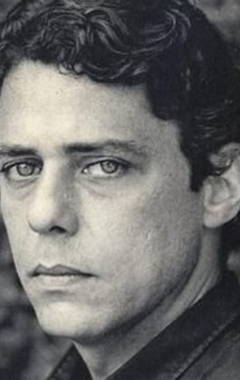

Amou daquela vez como se fosse a última
Beijou sua mulher como se fosse a última
E cada filho seu como se fosse o único
E atravessou a rua com seu passo tímido
Subiu a construção como se fosse máquina
Ergueu no patamar quatro paredes sólidas
Tijolo com tijolo num desenho mágico
Seus olhos embotados de cimento e lágrima
Sentou pra descansar como se fosse sábado
Comeu feijão com arroz como se fosse um príncipe
Bebeu e soluçou como se fosse um náufrago
Dançou e gargalhou como se ouvisse música
E tropeçou no céu como se fosse um bêbado
E flutuou no ar como se fosse um pássaro
E se acabou no chão feito um pacote flácido
Agonizou no meio do passeio público
Morreu na contramão atrapalhando o tráfego
(Amou daquela vez) como se fosse o último
(Beijou sua mulher) como se fosse a única
(E cada filho seu) como se fosse o pródigo
E atravessou a rua com seu passo bêbado
Subiu a construção como se fosse sólido
Ergueu no patamar quatro paredes mágicas
Tijolo com tijolo num desenho lógico
Seus olhos embotados de cimento e tráfego
Sentou pra descansar como se fosse um príncipe
Comeu feijão com arroz como se fosse o máximo
Bebeu e soluçou como se fosse máquina
Dançou e gargalhou como se fosse o próximo
E tropeçou no céu como se ouvisse música
E flutuou no ar como se fosse sábado
E se acabou no chão feito um pacote tímido
Agonizou no meio do passeio náufrago
Morreu na contramão atrapalhando o público
Amou daquela vez como se fosse máquina
Beijou sua mulher como se fosse lógico
Ergueu no patamar quatro paredes flácidas
Sentou pra descansar como se fosse um pássaro
E flutuou no ar como se fosse um príncipe
E se acabou no chão feito um pacote bêbado
Morreu na contramão atrapalhando o sábado
Por esse pão pra comer, por esse chão pra dormir
A certidão pra nascer e a concessão pra sorrir
Por me deixar respirar, por me deixar existir
Deus lhe pague
Pela cachaça de graça que a gente tem que engolir
Pela fumaça, desgraça que a gente tem que tossir
Pelos andaimes pingentes que a gente tem que cair
Deus lhe pague
Pela mulher carpinteira pra nos louvar e cuspir
E pelas moscas bicheiras a nos beijar e cobrir
E pela paz derradeira que enfim vai nos redimir
Deus lhe pague